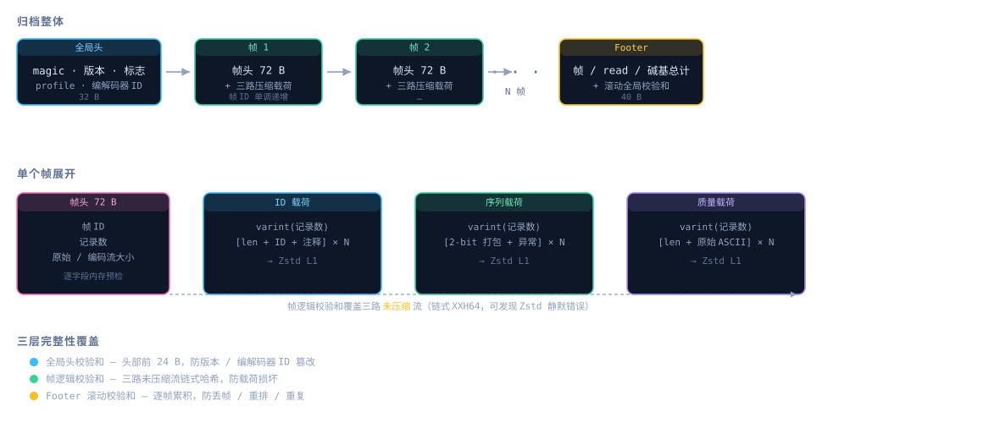
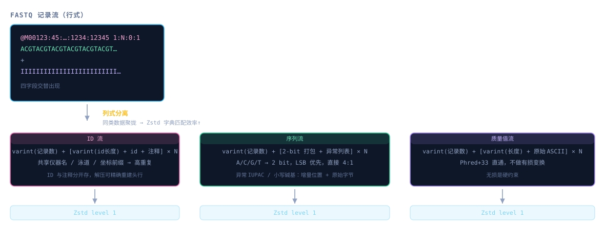
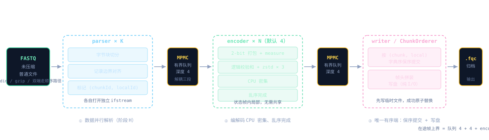
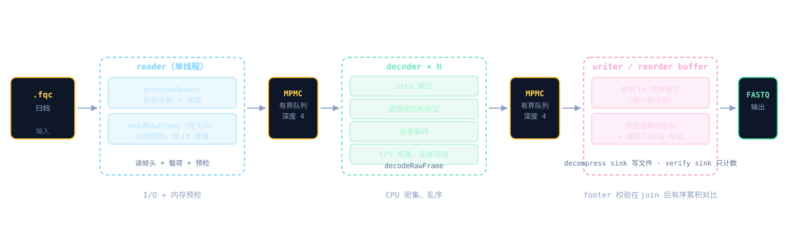

fq-compressor · FQC v2 设计笔记
把 FASTQ 压成小而可校验的归档：内存可控、管道友好、压缩比约 2.8–2.9×。本页从格式、算法、架构三个视角解析其设计。
# 快速开始
fqc=./build/clang-release/src/fqc
$fqc compress -i reads.fastq.gz -o reads.fqc # 压缩
$fqc decompress -i reads.fqc -o out.fastq # 解压
$fqc verify reads.fqc # 完整解码校验，不写 FASTQ
$fqc compress -i R1.fastq.gz -2 R2.fastq.gz -o paired.fqc # 双端压缩格式设计
FQC v2 是一种顺序帧归档格式（格式族 fqc-sequential/v2），围绕四个目标设计：内存有界、管道友好、故障边界清晰、吞吐量可量化。v1 兼容、索引、随机访问、全局 read 重排序——一概不做。
Identity格式身份
归档契约标识为 fqc-sequential/v2，命令 fqc，扩展名 .fqc，
magic 字节为 46 51 43 56 32 0D 0A 1A——即 ASCII FQCV2 后跟 CR LF 与 0x1A。
同名但格式不兼容的兄弟实现 fq-compressor-rust
（Rust，fqc-indexed/v2）使用不同的 magic 与字节布局，两者不能互相解码。
因此 .fqc 扩展名不具判别力，reader 必须先检查 archive magic。
fqc CLIByte Layout归档字节布局
所有整数均为小端序。凡是分配内存要用的大小字段，都写在对应载荷前面，先校验再分配。

| 区域 | 内容 | 完整性 / 边界 |
|---|---|---|
全局头 32 B |
magic、版本、标志位、profile、流编解码器 ID | XXH64 头部校验和；严格校验版本 / 编解码器 ID |
帧头 72 B（每帧重复） |
帧 ID、记录数、原始 / 编码流大小 | 帧 ID 单调递增；成对完整性不变量；逐字段及总量内存限制 |
ID 载荷 |
记录数、ID / 注释长度及字节 | Zstd level 1 |
序列载荷 |
记录数、长度、2-bit A/C/G/T、精确异常 | Zstd level 1 |
质量载荷 |
记录数、质量值长度及字节 | Zstd level 1 |
Footer 40 B |
帧 / read / 碱基总计及滚动校验和 | 总计必须与解码状态一致 |
Integrity完整性设计
三层 XXH64 校验覆盖从头部到帧尾的完整链路，用于发现随机损坏（非密码学认证）。
| 层级 | 覆盖范围 | 检测目标 |
|---|---|---|
| 全局头校验和 | 头部前 24 字节 | 版本 / 编解码器 ID 篡改、传输损坏 |
| 帧逻辑校验和 | 三路未压缩流的链式哈希 | 载荷数据损坏 |
| Footer 滚动校验和 | 逐帧校验和的累积哈希 | 帧丢失、重复、重排序 |
这意味着即使 Zstd 解压因损坏数据产生了错误输出（而非报错），校验和不匹配仍会触发 fail-closed——能发现 Zstd 的静默错误。 逻辑帧校验和覆盖三路未压缩流；footer 校验和逐帧滚动累积，因此重排序、丢帧、重复帧、载荷损坏、总计对不上都能被检测到。
Paired-end双端 reads
两个输入文件锁步读取，按 R1, R2, R1, R2 交替存储。两端记录数不一致直接报格式错误；双端帧的记录数必须是偶数，保证配对不会跨帧。解压时输出一个标准的交错 FASTQ 流。
Governance格式治理
压缩算法设计
FASTQ 每条记录有四个字段：标识符（ID + 注释）、序列、+ 分隔行、质量值。
其中 + 行不携带信息，直接丢弃；其余三个字段按列式分离编码为三条独立字节流，各自用 Zstd level 1 压缩后写入帧。
Columnar Separation总体思路：列式分离

为什么列式分离
FASTQ 是行式格式——四个字段交替出现。但同一字段在不同记录之间有更强的统计相关性：
- ID 共享仪器名、泳道号、坐标前缀（如
@M00123:45:000000000-ABCDE:1:1101:12345:1234），前缀重复率极高。 - 序列 的碱基分布和 k-mer 频率在同类数据中高度一致。
- 质量值 的分布由测序化学决定，同一 run 内模式相似。
把三个字段分开，Zstd 的滑动窗口里全是同类数据，字典匹配效率远高于行式交错——这是压缩比的主要来源之一。
为什么选 Zstd level 1
- 压缩 ~53 MiB/s，解压 ~182 MiB/s（150 bp 随机合成数据）。
- 相比 level 3–5，压缩比损失通常在 2–5%，但速度快 2–3 倍。
- 列式分离后冗余已大幅降低，更高级别的边际收益递减。
2-bit Packing序列编码：2-bit 打包
这是压缩比贡献最大的单步操作。大写 A/C/G/T 占绝大多数（Illumina 数据通常 >99%），四个碱基各用 2 bit 表示，4 个碱基打包进 1 字节，LSB 优先：
碱基 → 2-bit 值: A=0 C=1 G=2 T=3
序列 "ACGTACGT" 的打包结果:
字节 0: A(00) C(01) G(10) T(11) → 0b11_10_01_00 = 0xE4
字节 1: A(00) C(01) G(10) T(11) → 0xE4
打包后大小 = ⌈序列长度 / 4⌉ 字节原始 FASTQ 中每个碱基占 1 字节（8 bit），打包后占 2 bit，序列部分直接 4:1 压缩——在 Zstd 之前就已经完成。
| 阶段 | 每条记录序列大小 | 说明 |
|---|---|---|
| 原始 FASTQ | 150 B | 1 字节 / 碱基 |
| 2-bit 打包后 | 38 B | ⌈150 / 4⌉ = 38 |
| Zstd 后 | ~25–30 B | 随机序列的 Zstd 增益有限（熵已接近 2 bit/碱基） |
IUPAC Exceptions异常碱基处理
不是所有碱基都是大写 A/C/G/T。IUPAC 字母表还包括小写碱基 a c g t（软掩码，大小写有语义，必须保留）和简并碱基
R Y S W K M B D H V N。这些碱基无法用 2 bit 表示，按异常列表编码：
varint(异常数量)
对每个异常:
varint(位置增量) ← 第一个是绝对位置，后续是相对前一个异常的间距
1 字节原始 ASCII ← 保留原始字符，大小写不丢失打包时，异常位置的 2-bit 槽填 0（即 A），解码时先展开 2-bit 序列，再用异常列表覆写对应位置。
- 对 Illumina 短读长，异常列表通常为空（只有
varint(0)一个字节），开销几乎为零。 - 对长读长（ONT / PacBio），小写和简并碱基可能较多，增量编码避免为每个异常分配独立对象——v2 用一趟打包 + 一趟定位遍历解决。
- 解码侧会重新校验每个异常字节是否为合法 IUPAC 字符，拒绝非法输入。
Quality & ID质量值与 ID 流
质量值：最简策略——直通
varint(记录数)
对每条记录:
varint(质量值长度) + 原始 ASCII 字节 ← Phred+33，不做 delta / 游程 / 分箱 / 有损量化不做专门编码的原因：
- 无损是硬约束。质量值承载变异检测的统计权重，任何有损变换都会改变下游分析结果。
- Zstd 已经够用。字母表只有 ~94 个可打印 ASCII 字符（
!到~），且同一 run 内分布模式重复。 - 专用编解码器尚未通过准入门槛。还没有哪个专门的质量值编解码器能在足够大的真实语料上同时通过体积和吞吐量测试。
ID 流
varint(记录数)
对每条记录:
varint(id 长度) + id 字节 + varint(注释长度) + 注释字节ID 和注释分开存储（FASTQ 头行以第一个空格分割），因为：解压时需要精确重建 @{id}[ {comment}] 格式；ID 部分的重复前缀是 Zstd 字典匹配的主要收益来源。
Checksum & Varint校验与 varint 编码
三层 XXH64 校验的完整说明见格式设计 · 完整性。链式计算顺序：
XXH64(质量值流, XXH64(序列流, XXH64(ID流, 0)))；footer 把每帧 8 字节校验和依次喂入全局 XXH64。
所有长度、计数、位置增量均使用 LEB128 风格的无符号 varint：
- 每字节 7 bit 有效载荷，最高位为续传标志。
- 最多 10 字节（64 bit），解码时检查
shift == 63溢出。 - 小值（<128）只占 1 字节，对短读长的长度字段和空异常列表非常友好。
End-to-end端到端压缩比分析
以 150 bp Illumina 随机合成数据为例（实测压缩比 ~2.95×）：
| 组件 | 原始大小 / 记录 | 压缩后估算 | 主要压缩手段 |
|---|---|---|---|
| 序列 (150 bp) | 150 B | ~25–30 B | 2-bit 4:1 打包 + Zstd |
| 质量值 (150 chars) | 150 B | ~80–100 B | Zstd 字典匹配 |
| ID + 注释 (~60 chars) | 60 B | ~10–15 B | Zstd 前缀匹配 |
FASTQ 框架（@ + 换行） | 6 B | 0 B | 丢弃，解压时重建 |
| 合计 | ~366 B | ~120 B | ~3× |
它占原始数据约 40%，但 Zstd 压缩后仍占较大比例。真实短读（质量符号少、分布集中）通常优于随机合成；质量字母表接近满档的长读可以更差。
Trade-offs设计取舍
| 选择 | 收益 | 代价 |
|---|---|---|
| 列式分离 | Zstd 字典效率大幅提升 | 编解码需要三趟遍历 |
| 2-bit 打包 | 序列 4:1 压缩，最大单一贡献 | 异常碱基需要额外列表 |
| Zstd level 1 | 高吞吐（>50 MiB/s 压缩） | 比高级别少 2–5% 压缩比 |
| 质量值不编码 | 实现简单，无损保证 | 压缩比瓶颈 |
| 未压缩流校验和 | 检测 Zstd 静默错误 | 校验和计算在解压后的数据上 |
| 增量编码异常位置 | 避免 per-base 对象分配 | 异常密集时列表较长 |
软件高性能架构设计
压缩（未压缩普通文件）是多帧并行编码流水线，解压是其镜像；三条命令共用同一引擎。
对外产品形态只有 fqc CLI——fqc_core、fqc_cli 与 include/fqc 下的头文件纯粹是为了组织源码和测试，不对外安装，也没有源码或 ABI 兼容承诺。
Dataflow数据流流水线


verify 只是把 sink 换成只计数——因此是完整解码，不是常数时间元数据检查；CPU / 内存成本与 decompress 同量级。
Parallelism并行执行架构
帧边界天然独立，是多帧并行编码的切分点。编解码器状态保持帧内局部或 worker 内局部，worker 间无需共享可变状态。
- 压缩路径：未压缩普通文件走阶段 H 的数据并行解析——K 个 parser 各自打开独立
ifstream，按字节块切分并做记录边界对齐，帧以(chunkId, localId)标记；N 个 encoder worker 并行编码并压缩（CPU 密集、乱序完成）；writer 用ChunkOrderer按字典序提交。两条有界 MPMC 队列（深度 4）解耦三段。 - 解压路径：reader 线程用
ArchiveReader::readRawFrame做纯 I/O 读帧（每帧带递增帧 id）；N 个 decoder worker 并行decodeRawFrame；writer 线程经 reorder buffer 按帧 id 有序提交后做滚动全局校验和再交给 RecordSink。 - 非并行路径：gzip / stdin / 双端走单 reader 顺序解析（双端 R1/R2 锁步不并行切块）。
在途帧上界 = 两条队列深度（各 4）+ N 个 encoder（默认 4）≈ 12 帧，每帧由编码前内存预检约束，整体远低于操作预算。
并行化演进（沿瓶颈逐步推进）
- 阶段 D — 并行 encoder。
- 阶段 F — 把 zstd 下沉到 encoder worker，writer 退化为纯 I/O。
- 阶段 H — 对未压缩普通文件做数据并行解析。
在尚未证实某段成为瓶颈的前提下引入 TBB DAG 或线程池，只会把 v2 已经干掉的重复状态、输出排序和在途内存风险重新请回来。
Memory内存模型
CLI 默认预算 16 GiB，最低支持 64 MiB。编解码器不写临时文件；输出到普通文件时先写到目标旁边的临时文件，整个归档完成后再原子替换。
最大帧大小 = (内存限制 − 运行时预留) / 4；累积目标用 / 8。在 64 MiB 限制下，发布流程实测 RSS 为 25–32 MiB。
ProfileProfile 判定
auto 模式最多采样 50,000 条记录或 512 MiB 碱基，且不超过可用操作预算的八分之一。
| Profile | 判定特征 |
|---|---|
| Illumina | 短读长（最长 ≤ 1,000 bp，平均 ≤ 500 bp） |
| ONT | 多数 read 头部含 runid= 或 channel 标签；或长读且 ID 为 ENA / SRA / DDBJ 转写后的 run accession（SRR / ERR / DRR + 数字） |
| PacBio HiFi | 多数头部含 /ccs 或 hifi 标记 |
| PacBio CLR | 多数头部含 PacBio / subread 或 movie / ZMW / subread 风格标记 |
如果长读长输入的特征模糊、无法明确判定，会直接拒绝并提示用户传 --profile。Profile 会写入归档，但目前所有 profile 共用同一套回退编码——还没有哪个专门编解码器能同时通过体积和吞吐量的准入门槛。
Fail Closed故障行为
- 覆盖已有输出必须加
--force；输入和输出不允许是同一个文件。 - 截断、未知格式 / 版本 / 编解码器、校验和不匹配、不可能的流长度、逻辑流尾部或 footer 之后出现多余字节、配对数对不上、内存超限——一律 fail closed，直接报错终止。
verify走完整解码流程（完整 zstd 解压 + 逻辑流校验 + 记录解码），不能当作常数时间 metadata check。- XXH64 用于发现随机损坏，不提供对恶意篡改的密码学认证。
- v1 输入直接拒绝，没有任何部分兼容或启发式猜测的路径。
Modules模块划分
| 命名空间 | 职责 |
|---|---|
fqc::format | 线上格式、流编码、校验和、内存预检 |
fqc::commands | profile 判定与单引擎有界执行 |
fqc::io | FASTQ 解析、gzip 输入、文件 / stdin / stdout 流工厂 |
fqc::common | 记录、结构化错误、日志 |
内部编排入口是 include/fqc/commands/archive_engine.h；src/main.cpp 里的 CLI 只做三件事：解析参数、构造请求、报告结构化错误。旧版的 ABC、SCM、v1 格式 / 索引 / 重排序映射、异步 I/O 孤岛、TBB 流水线——全部删干净了，没有留一行死代码。
Benchmarks性能基准
合成数据（阶段 H A/B 同窗口，64 MiB 内存预算，随机 FASTQ ×5 次中位数）：
| 数据 | 压缩（并行解析） | 相对顺序解析 | 压缩比 |
|---|---|---|---|
| Illumina-like 150 bp | 148.84 MiB/s | +47.7% | 2.96× |
| ONT-like 20 kbp | 与顺序路径持平 | — | 2.84× |
WSL2 状态波动极大（同代码同配置两次跑吞吐可差 20–85%）。真实生物语料实测见docs/real-corpus.md；并行化收益沿瓶颈逐步推进：长读解析占比小，并行解析收益落在噪声内。
相关资源
| 资源 | 说明 |
|---|---|
| GitHub 仓库 | 源码、CI、issue 跟踪 |
| ALGORITHM.md | 压缩算法与原理（本页第 02 章来源） |
| ARCHITECTURE.md | 架构与字节布局（本页第 01 / 03 章来源） |
| openspec · archive-format spec | 顺序归档格式的规范性规格与验收场景 |
| docs/building.md | 构建、工具链、质量门禁 |
| docs/real-corpus.md | 真实生物语料验收 |
| CHANGELOG.md | 变更记录 |
| fq-compressor-rust | Rust 兄弟实现（fqc-indexed/v2，格式不兼容） |